第2回 オリーブ杯バウンドテニス大会
申込みのしかた（図解）
スマホでも、パソコンでも、同じ手順でお申込みいただけます。
1申込みページを開く
香川県内の方と、香川県外の方で、申込みページが分かれています。協会からのご案内（メール・LINE・チラシなど）にあるリンクから開いてください。
| 香川県内の方 | https://royschannel.com/olive2-kennai 締切：2026年10月23日（金曜日） |
|---|---|
| 香川県外の方 | https://royschannel.com/olive2-kengai 締切：2026年11月17日（火曜日） |
アドレスを手で打つときは、スマホやパソコンの画面のいちばん上の「アドレス欄」に、上の英数字をそのまま打って、決定（Enter）を押します。
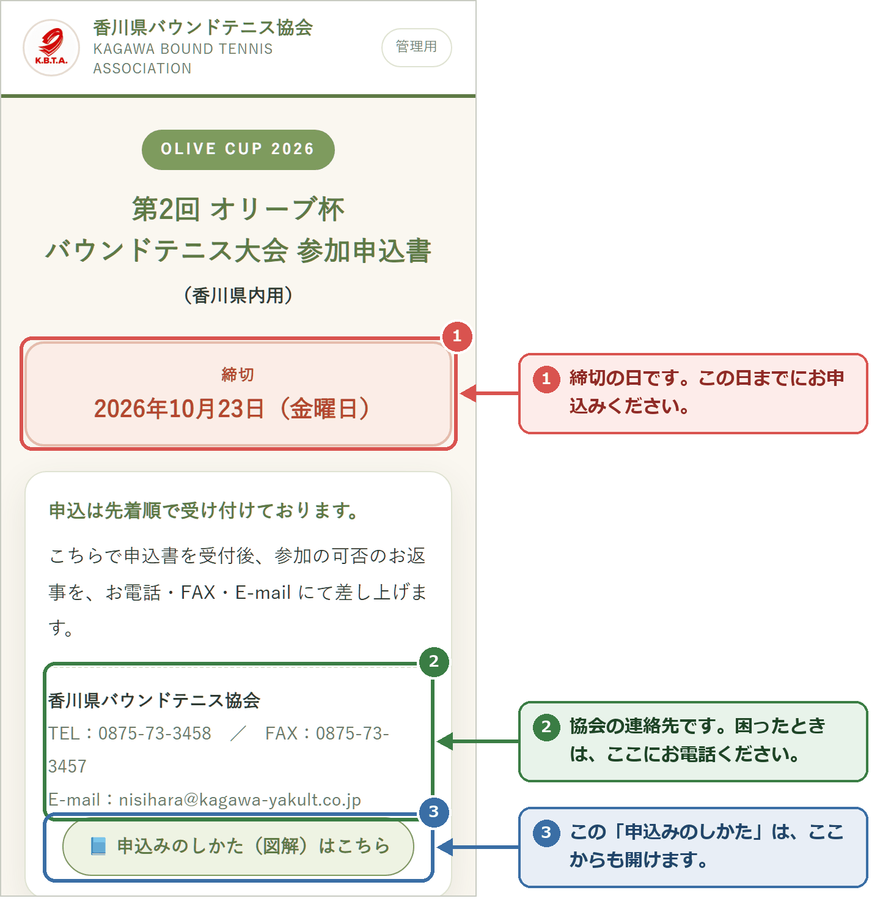
2申込みの流れ（全体）
申込みは、次の順番で進みます。入力したあと、いったん確認の画面が出てから送信します。
3申込責任者を入れる
大会に関するご連絡は、この「申込責任者」の方あてにお送りします。「必須」の欄は、必ず入れてください。
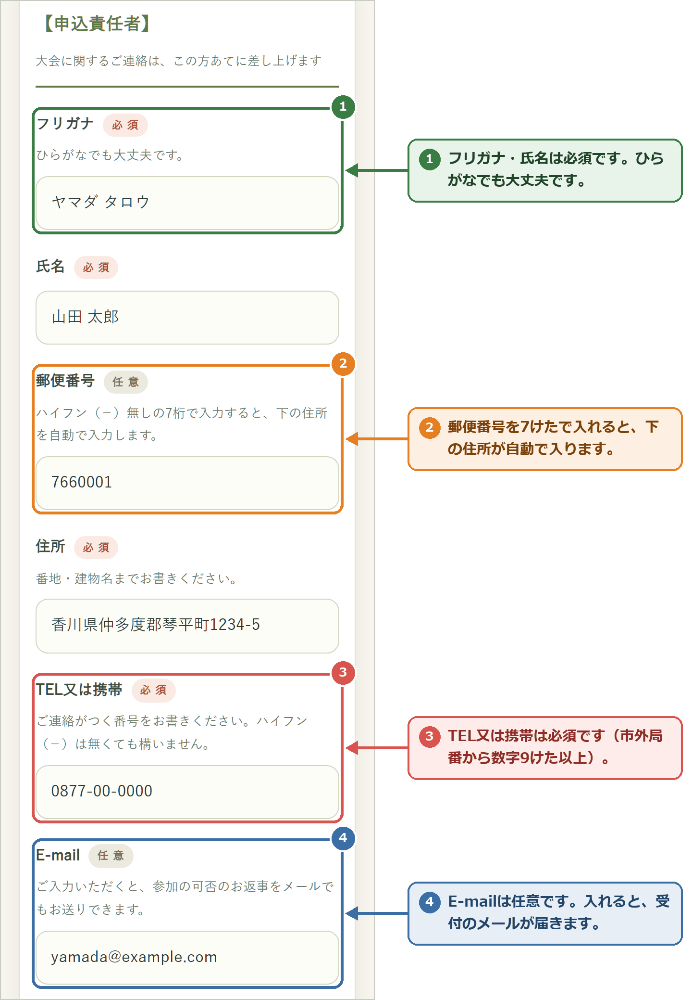
4チーム名と申込み人数を選ぶ
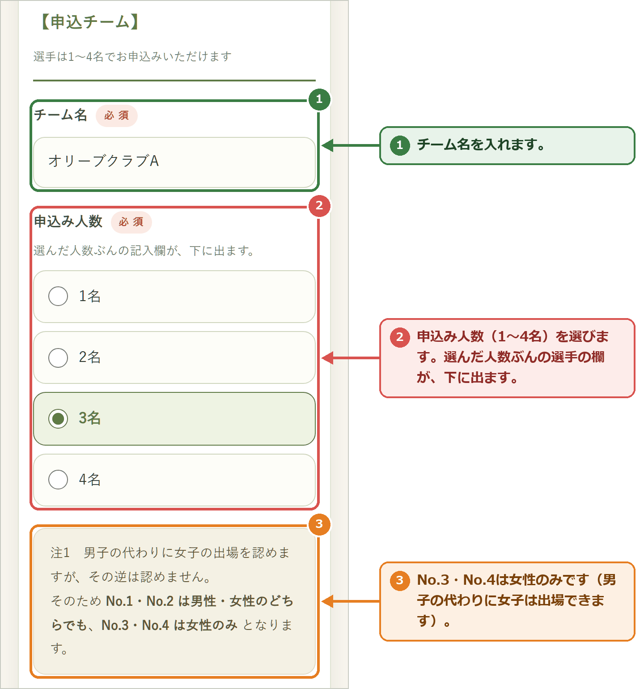
申込み人数（1名・2名・3名・4名）の四角を押して選ぶと、その人数ぶんだけ、下に選手の欄が出ます。はじめは「4名」が選ばれています。
5選手とチーム監督を入れる
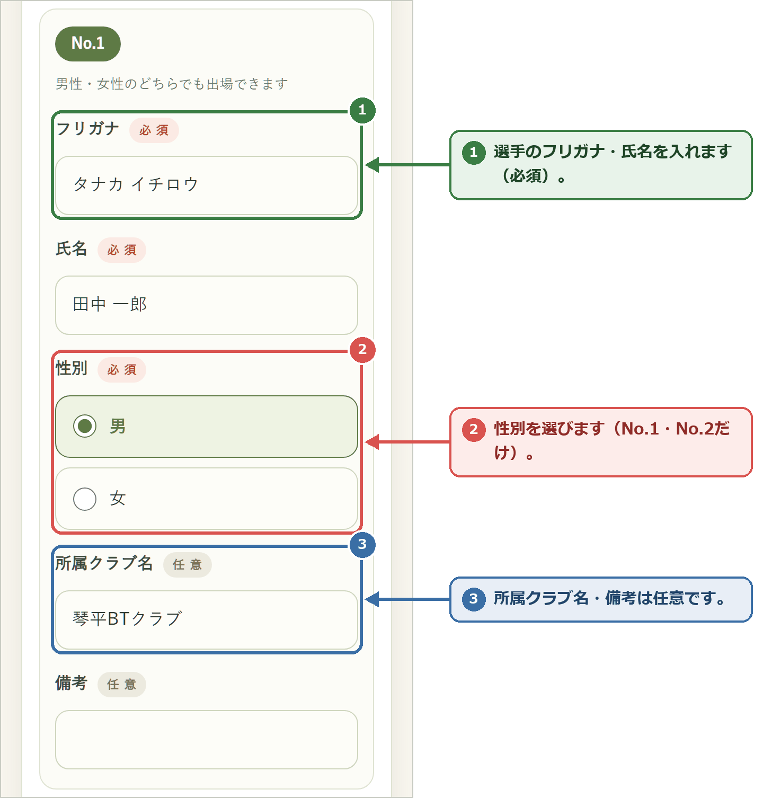
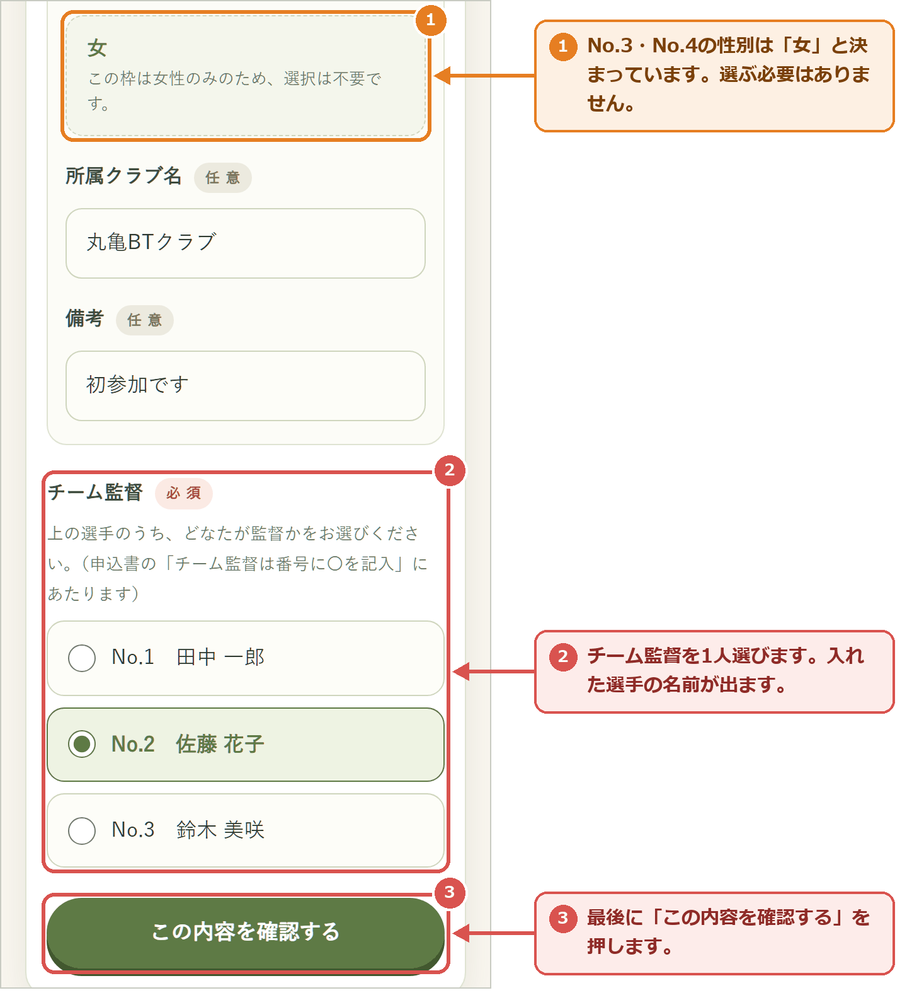
そのため、No.1・No.2 は男性・女性のどちらでも出場でき、No.3・No.4 は女性のみです（No.3・No.4 は性別を選ぶ必要はありません）。
チーム監督は、入れた選手の中から1人を選びます。選択肢には、入れた選手の名前が出ます。
6確認して送信する
「この内容を確認する」を押すと、入力した内容の一覧（確認の画面）が出ます。上から順に見て、まちがいがないか確かめてください。
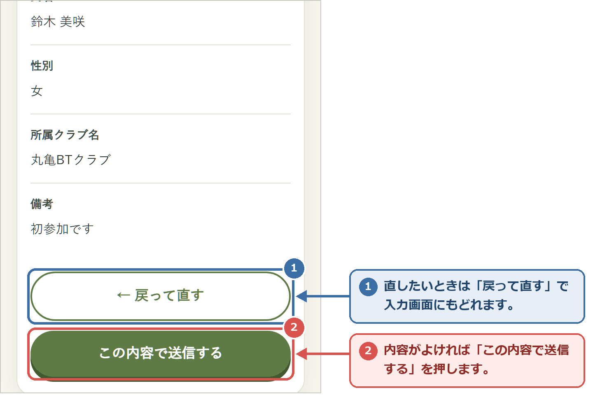
7お申込みの完了と、受付のメール
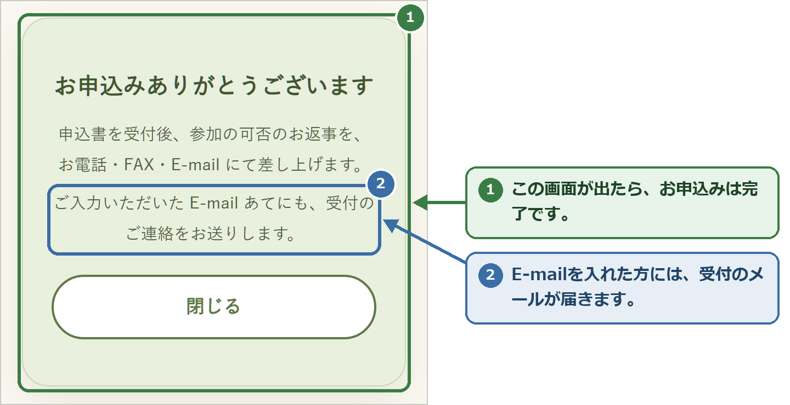
E-mail を入れた方には、すぐに次のようなメールが届きます。届かないときは、迷惑メールのフォルダも見てください。
件名 【第2回オリーブ杯】参加申込みを受け付けました（オリーブクラブA）
山田 太郎 様
第2回 オリーブ杯バウンドテニス大会（香川県内用）への
参加申込みをいただき、ありがとうございます。
以下の内容で受け付けました。
（申込みの内容が続きます）
申込は先着順で受け付けております。
参加の可否は、あらためてお電話・FAX・E-mail にてお返事いたします。
このメールにそのまま返信すると、協会の事務局に届きます。
8定員に達していたら（キャンセル待ち）
申込みが定員に達すると、申込みページを開いたときに「申込みの受付を終了しました」の画面になります。この画面から、キャンセル待ちに登録できます。
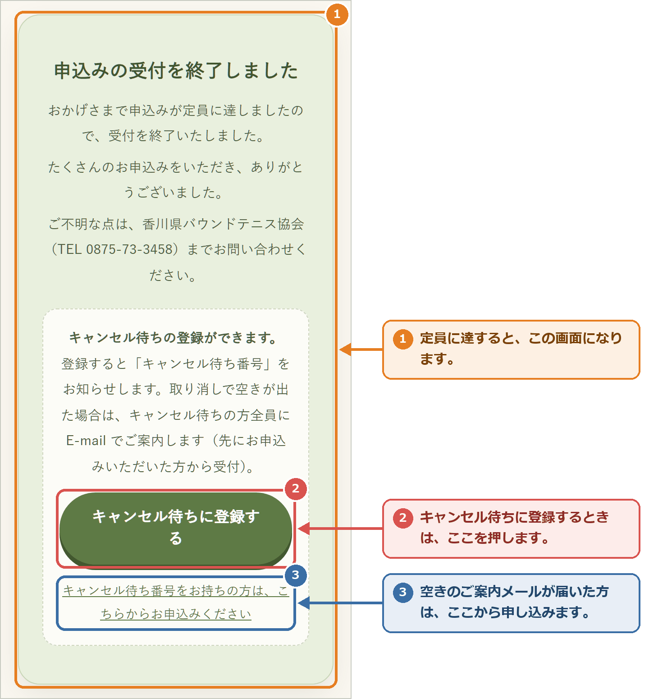
「キャンセル待ちに登録する」を押すと、入力の画面にもどります。上に黄色い「キャンセル待ちの登録です」の案内が出ます。入れ方は申込みと同じです（3〜6）。
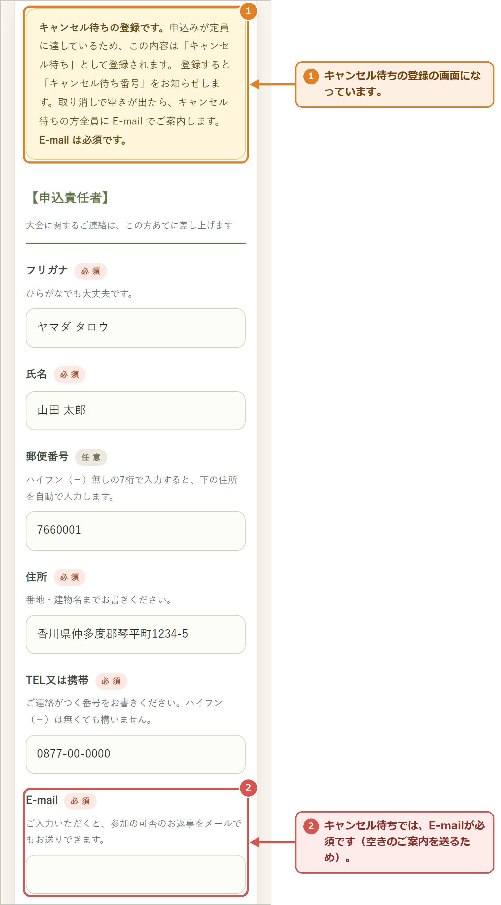
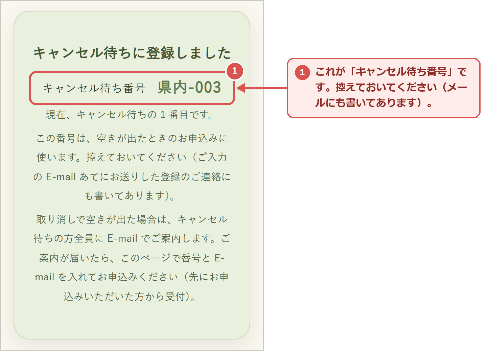
山田 太郎 様
第2回 オリーブ杯バウンドテニス大会（香川県内用）は、申込みが定員に達しているため、
以下の内容で「キャンセル待ち」として登録しました。（まだ参加申込みではありません）
キャンセル待ち番号：県内-003
この番号は、空きが出たときのお申込みに使います。大切に保管してください。
9「空きが出ました」のメールが届いたら
取り消しで空きが出ると、キャンセル待ちの方全員に、次のメールが届きます。空きの数に限りがあるため、先に申し込んだ方から受け付けます。お早めにどうぞ。
■ お申込みのしかた 1. 下のページを開きます。 https://royschannel.com/olive2-kennai?w=003 2. 「キャンセル待ち番号」と「ご登録の E-mail」を入れて「呼び出す」を押します。 3. ご登録の内容が表示されます。変更があれば直し、なければそのまま 「この内容を確認する」→「この内容で申し込む」を押してください。 ■ 期限 （ご案内から3日後の日時）までにお申込みください。 期限を過ぎると、キャンセル待ちから外れますので、ご了承ください。
① メールのリンクを開いて、呼び出す
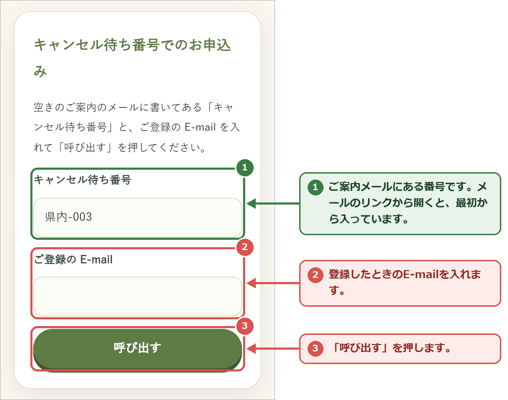
② 登録した内容を確かめて、申し込む
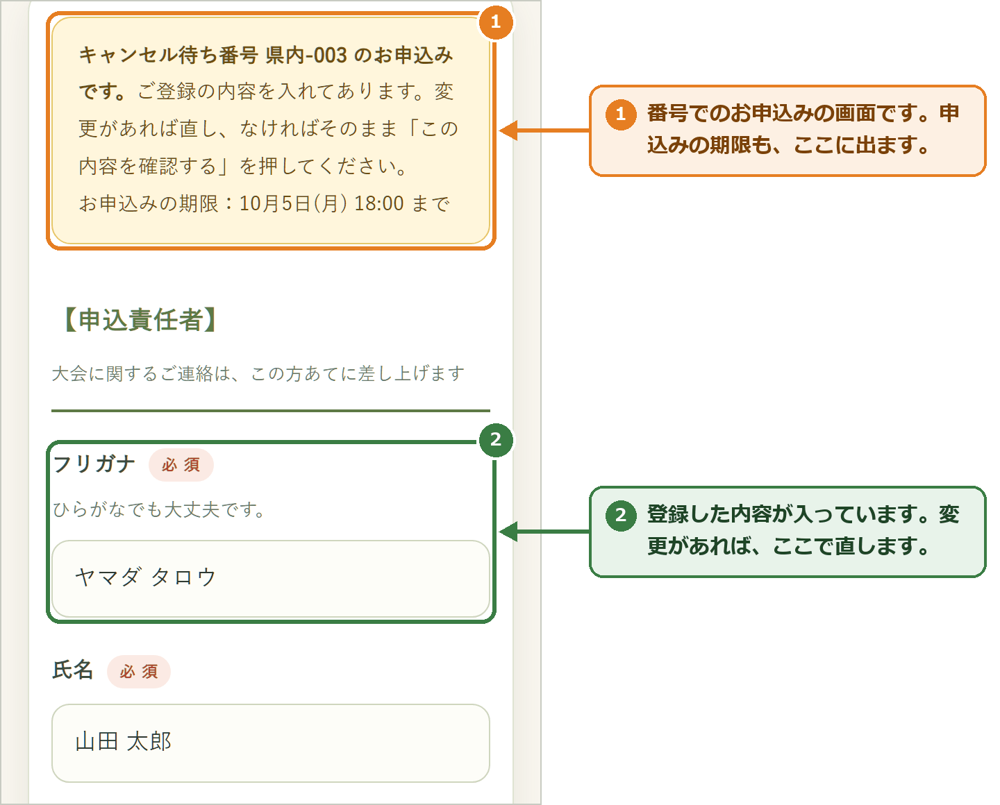
内容に変更があれば直し、なければそのまま「この内容を確認する」を押します。確認の画面のボタンは 「この内容で申し込む」 になっています。押して「お申込みありがとうございます」が出たら完了です。
10困ったとき
| 「○○が入力されていません」と出る | その欄が空いています。入れてから、もう一度「この内容を確認する」を押してください。 |
|---|---|
| 住所が自動で入らない | 郵便番号をハイフン（－）なしの7けたで入れてください。それでも入らないときは、住所を手で入れてください。 |
| 受付のメールが届かない | 迷惑メールのフォルダを見てください。E-mail を入れなかった場合は、メールは届きません（お申込みは届いています）。 |
| 送信できない | 電波の良い所で、もう一度お試しください。だめなときは協会にお電話ください。 |
| キャンセル待ち番号を忘れた | 「キャンセル待ちに登録しました」のメールに書いてあります。見当たらないときは、協会にご連絡ください。 |
| 申込みを取り消したい・内容を直したい | 協会にご連絡ください。 |
協会の連絡先は、申込みページのいちばん上の枠（図1の②）に出ています。